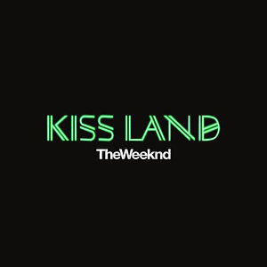
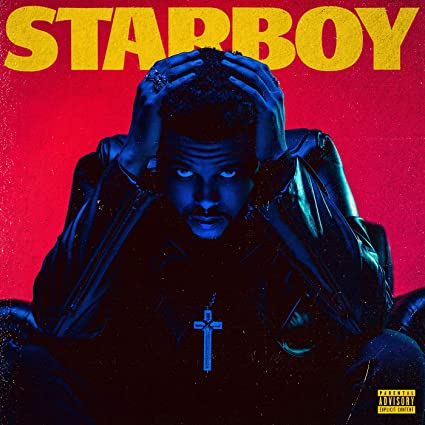
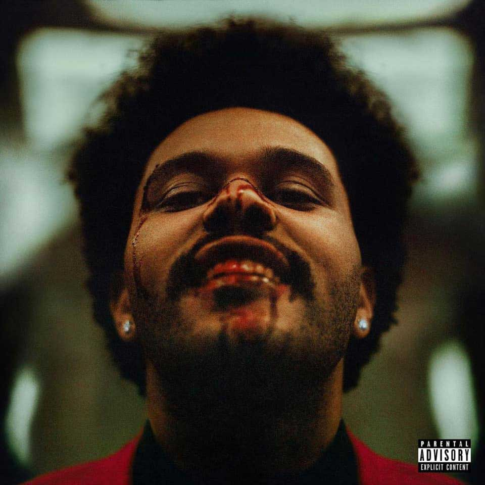

Álbunes estudio:
Kiss Land
Kiss Land es el título del primer álbum de estudio del cantante canadiense The Weeknd. Fue lanzado en los Estados Unidos el 10 de septiembre de 2013, por XO y Republic Records. Kiss Land fue apoyado por seis sencillos: «Kiss Land», «Belong to the World», «Love in the Sky», «Live For», «Pretty» y «Wanderlust». La única aparición especial del álbum es de su frecuente colaborador Drake. La producción del álbum fue manejada principalmente por Danny Boy Styles, The Weeknd y Jason "DaHeala" Quenneville.
Tras su lanzamiento, Kiss Land recibió críticas generalmente positivas de los expertos. En Metacritic, el álbum recibió una puntuación media de 65, basado en 31 opiniones. El álbum debutó en el número 2 en el Billboard 200, vendiendo 95.000 copias en su primera semana. A partir de agosto de 2015, el álbum ha vendido 273.000 copias en los Estados Unidos.
Beauty Behind the Madness
Beauty Behind the Madness es el segundo álbum de estudio del cantante canadiense The Weeknd. Republic Records y XO lo lanzaron alrededor del mundo el 28 de agosto de 2015 como descarga digital. El álbum presenta apariciones especiales de Labrinth, Ed Sheeran y Lana Del Rey, con una producción manejada por el propio The Weeknd, Stephan Moccio, DaHeala, Illangelo, Ben Billions, DannyBoyStyles, Max Martin y Ali Payami, entre otros.
«Often», «The Hills», «Can't Feel My Face», «In the Night», y «Acquainted» apoyaron el lanzamiento del álbum. «The Hills» y «Can't Feel My Face» alcanzaron el número uno en el Billboard Hot 100 de los Estados Unidos. El álbum también incluye «Earned It», la canción nominada al Premio de la Academia a la «Mejor canción original», que se lanzó como un sencillo de la banda sonora de Fifty Shades of Grey.
Beauty Behind the Madness recibió comentarios generalmente positivos de los críticos, además debutó en el número uno en varios países, incluidos los Estados Unidos y el Reino Unido, y en su primera semana registró ventas por 412 000 unidades, además del streaming. Según la Federación Internacional de la Industria Fonográfica, se convirtió en el décimo álbum más vendido de 2015, con 1.5 millones de copias en todo el mundo.

Starboy
Starboy es el título del tercer álbum de estudio del cantante y compositor canadiense The Weeknd. XO y Republic Records lanzaron el disco el 25 de noviembre de 2016. El álbum cuenta con varios artistas invitados tales como Daft Punk, Lana Del Rey, Future y Kendrick Lamar. El álbum fue apoyado por siete sencillos: «Starboy», «I Feel It Coming»,«Secrets» ,«Party Monster», «Reminder», «Rockin'» y «Die for You».
«Starboy» recibió revisiones generalmente positivas de los críticos y debutó en el número uno en la lista Billboard 200, vendiendo 348 000 unidades equivalentes al álbum y 209 000 copias físicas en la primera semana. También debutó en el número uno en la lista de Billboard, Canadian Albums Chart. En enero de 2019, el álbum recibió la certificación de triple platino por la Recording Industry Association of America (RIAA). El álbum ganó el Premio Grammy al Mejor Álbum Urbano Contemporáneo en la entrega número 60 de los Premios Grammy.
After Hours
After Hours —en español, A deshoras— es el quinto álbum de estudio del cantante canadiense The Weeknd. Fue lanzado el 20 de marzo de 2020 por XO y Republic Records. Fue producido principalmente por The Weeknd, junto con una variedad de productores como DaHeala, Illangelo, Max Martin, Metro Boomin y OPN, la mayoría de los cuales The Weeknd había trabajado anteriormente. La edición estándar del álbum no tiene colaboraciones con otros artistas, pero la edición de remixes contiene apariciones especiales de Chromatics y Lil Uzi Vert. Temáticamente, After Hours explora la promiscuidad, el exceso de indulgencia y el autodesprecio. El álbum tiene una fuerte influencia de los sonidos de los 80's.
Contó con el apoyo de cuatro sencillos: "Heartless", "Blinding Lights", "In Your Eyes" y "Save Your Tears", y los dos primeros encabezaron el Billboard Hot 100 de EE. UU. Y recibieron la certificación de platino. Su tema principal fue lanzado como sencillo promocional. En marzo de 2020, After Hours rompió el récord de pre-adiciones más globales en la historia de Apple Music, con más de 1.02 millones de usuarios. El álbum recibió críticas generalmente positivas de los críticos de música, y algunos lo nombraron el mejor trabajo de Weeknd. Debutó en la cima del Billboard 200, ganando 444.000 unidades equivalentes a álbumes, de las cuales 275.000 fueron ventas puras, marcando el cuarto álbum número uno de Weeknd en los Estados Unidos. Y se mantuvo en la cima de la lista durante cuatro semanas consecutivas. También alcanzó el primer puesto en otros 20 países, incluidos Canadá y el Reino Unido. After Hours se promoverá con el The After Hours Tour, que se extenderá por América del Norte y Europa.
